Префектура Кагосима · от сада Сэнганъэн до Акунэ · ремёсла и еда
Чёрная Кагосима: стекло сацума-кирико, засыпанные тории, тёмный онсэн и сладкий соевый соус
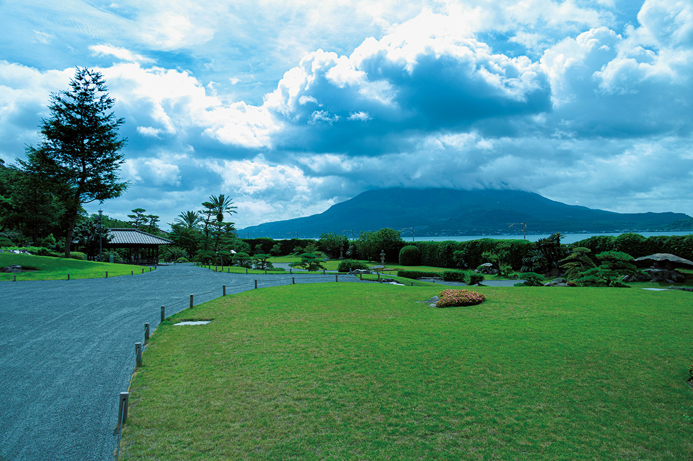
Если искать в Кагосиме один цвет, это будет чёрный. Это чёрное стекло мастеров рода Симадзу, вулканический пепел Сакурадзимы, тёмная вода онсэна, чёрная свинья, сётю на чёрном кодзи и густой сладкий соевый соус.
Маршрут
Почему чёрный
Осенью 2020 года по Кюсю пошёл туристический поезд «36 плюс 3»: у каждого дня недели в его расписании свой цвет, и пятничный, «чёрный» маршрут начинается в Кагосиме. Этот цвет удобно взять как нить для поездки по префектуре: он ведёт от стекольной мастерской у моря к вулкану, горячим источникам и винокурням.
Кагосима стоит на берегу залива Кинко, посреди которого поднимается Сакурадзима. Около 700 лет, с XII по XIX век, этими землями правил род Симадзу. Здесь до сих пор с уважением вспоминают двух его глав: Ёсихиро Симадзу (1535–1619), прославленного полководца эпохи междоусобных войн, и Нариакиру Симадзу (1809–1858), 28-го главу рода, который в середине XIX века начал модернизацию края.
Стекло
Сацума-кирико: чёрный, который режут на ощупь
Нариакира Симадзу хотел защитить страну от западных держав и запустил целую программу промышленных предприятий «Сюсэйкан». Одним из её плодов стало резное стекло сацума-кирико: его делали в том числе на экспорт в Европу. После смерти князя производство угасло и больше ста лет не существовало, пока в 1985 году компания Shimazu Kogyo не восстановила его в мастерской Satsuma Glass Kogei.
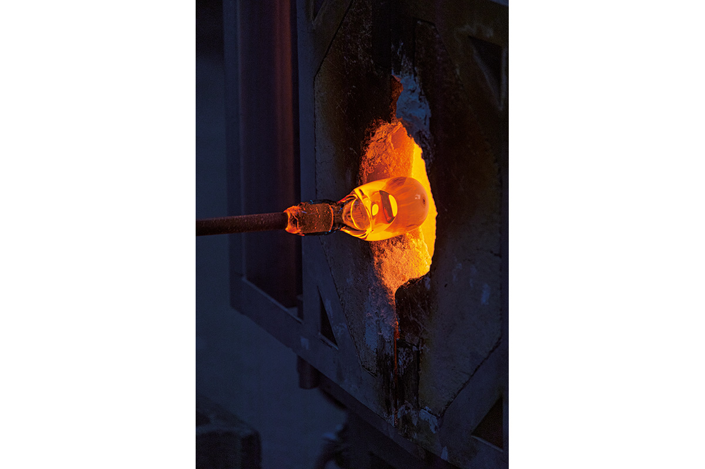
Сацума-кирико ценят за чёткую огранку и яркое цветное стекло, но главное в нём «бокаси», мягкий переход цвета от густого к почти прозрачному. В 2015 году мастерская выпустила серию «Сидзя», где чёрное стекло стоит в паре с белым. Чтобы чёрный тоже давал этот плавный переход, мастера долго экспериментировали и пришли к двойному слою: на светло-серое стекло накладывают густо-чёрное. Получается размытый тон, похожий на тушь в японской монохромной живописи.
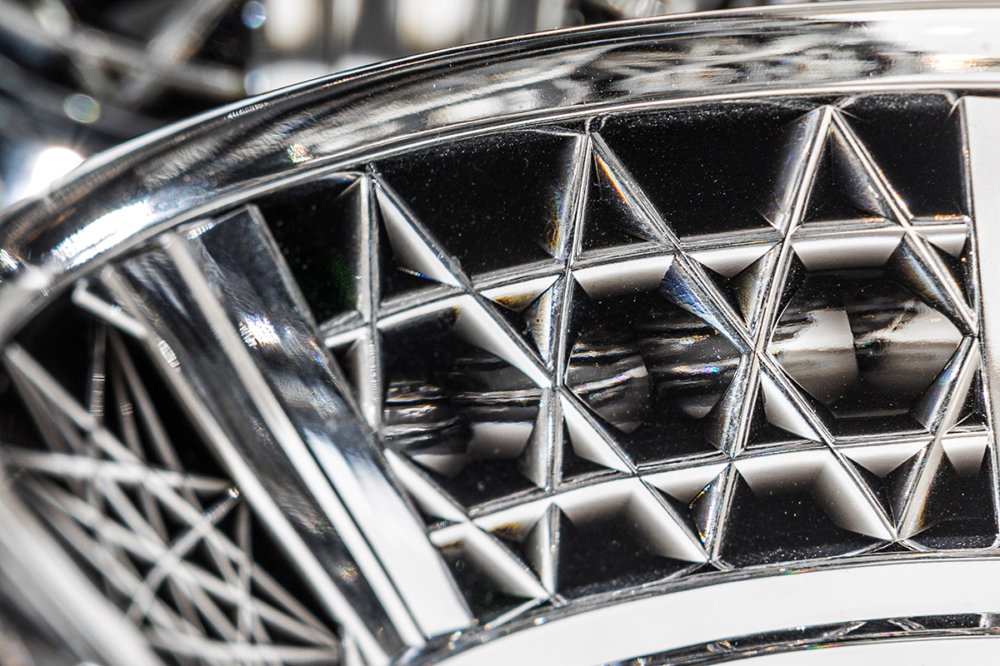
Чёрное стекло не пропускает свет, поэтому резать его сложнее, чем цветное. За такую работу берутся только опытные резчики.
«Когда режешь чёрное, внутренне собираешься. На совсем тёмном стекле проступает тонкий узор, после полировки он становится ещё красивее, и радость от готовой вещи больше, чем с любым другим цветом»
сотрудник Satsuma Glass Kogei
Satsuma Glass Kogei (Shimazu Kogyo)
- Адрес
- префектура Кагосима, город Кагосима, Ёсино-тё, 9688-24
- Телефон
- +81 99-247-2111
Сила
Сад Сэнганъэн и пушки Сацумы
Рядом с мастерской лежит сад Сэнганъэн, загородная резиденция рода Симадзу. Её в 1658 году устроил 19-й глава рода Мицухиса Симадзу (1616–1695). Сад огромен: залив Кинко играет в нём роль пруда, а Сакурадзима роль искусственной горы. При саде работает музей Сёко сюсэйкан, посвящённый предприятиям Нариакиры: литью пушек, кораблестроению и всему, что сделало эти места первым промышленным районом Японии. Здесь выставлены и орудия, из которых стреляли по британскому флоту.
Хранитель музея объясняет силу княжества Сацума несколькими причинами. В то время средний рост японца был около 150 см, а местные самураи ели свинину, и среди них встречались люди выше 170 см. Местная система воспитания молодёжи «госю кёику» закаляла их тело и дух. Потом появились фитильные ружья, которые попали в Японию через остров Танэгасима, и пушки и корабли, построенные при Нариакире. В англо-сацумской войне 1863 года пушки «Сюсэйкан» нанесли британцам серьёзный урон, и это удивило весь мир.
«Эту силу держала гибкость Нариакиры: он охотно учился у Запада и брал у него всё полезное»
хранитель музея Сёко сюсэйкан
Ружья и пушки, чёрный металл, который у многих ассоциируется с родом Симадзу, появились из желания защитить страну и её людей.
Сад Сэнганъэн
- Адрес
- префектура Кагосима, город Кагосима, Ёсино-тё, 9700-1
- Телефон
- +81 99-247-1551
Вулкан
Сакурадзима: чёрная земля и засыпанные тории
Сакурадзима извергается почти каждый день, и чёрный пепел здесь часть обычной жизни. Но у вулкана есть и другая сторона.
«Сакурадзиму обычно представляют как место, где от извержений одни хлопоты. Но пепел и пемза хорошо пропускают воду, на них растут гигантская редька сакурадзима-дайкон и мелкие мандарины, а из вулканических недр бьют горячие источники. Таких даров больше нигде нет»
сотрудник визит-центра Сакурадзимы
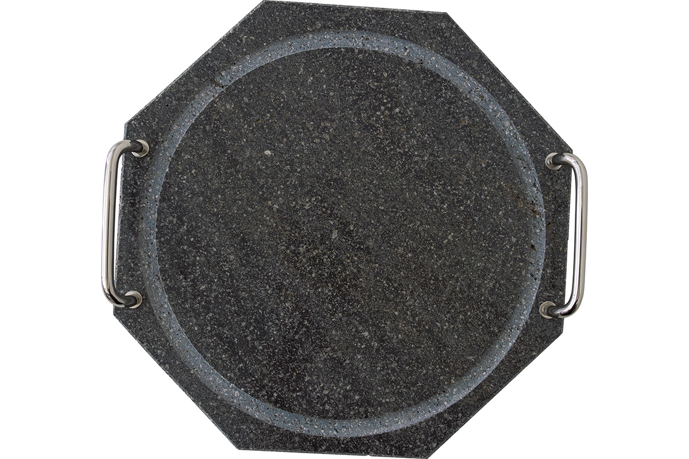
Самое сильное извержение прошлого века случилось в 1914 году. Всего за один день остров засыпало пемзой и пеплом, и в деревне Куроками слой достиг двух метров. Местные жители сохранили тории святилища такими, какими их оставил вулкан: из земли торчит только верхняя перекладина. Это зрелище сразу показывает, какой силы было извержение больше ста лет назад.
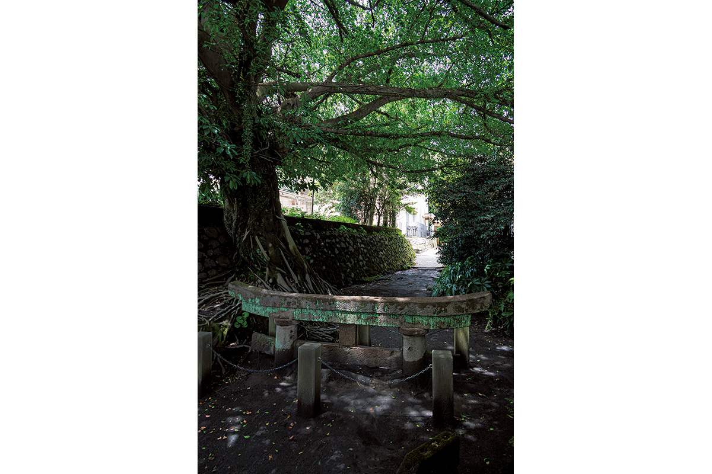
Засыпанные тории Куроками
- Адрес
- префектура Кагосима, город Кагосима, Куроками-тё, 647
- Как добраться
- справки в визит-центре Сакурадзимы (город Кагосима, Сакурадзима-Ёкояма-тё, 1722-29)
- Телефон
- +81 99-293-2443 (визит-центр)
Онсэн
Чёрная вода в Юсуи
В городке Юсуи, на севере префектуры, работает онсэн «Цурумару». Вода здесь очень насыщенна содой и относится к «мор-онсэнам»: она поднимается через пласт торфа и несёт растительную органику, поэтому выглядит поразительно чёрной. Пахнет она свежо, как луг, и мягко ложится на кожу. Говорят, что она помогает при порезах и кожных болезнях.
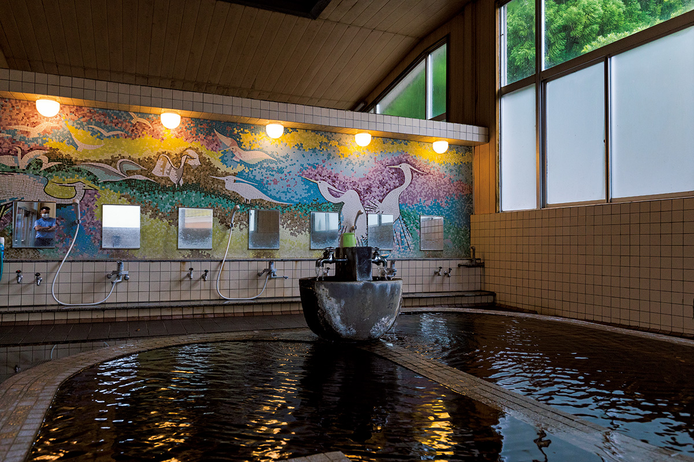
Онсэн «Цурумару»
- Адрес
- префектура Кагосима, уезд Аира, Юсуи, Цурумару, 622-5
- Телефон
- +81 995-75-2858
Свинина
Чёрная свинья с фермы в Иса
Чёрная свинья куробута, которую растят на природе Кагосимы, славится сладким и при этом лёгким жиром. Владелец фермы «Окита Куробута» в городе Иса около 1990 года решил делать ставку на качество, а не на объём, и выбрал местную чистопородную беркширскую свинью. Свиньи свободно бегают по большой территории, поэтому мясо у них плотное. Кормят их ячменём и другим нежирным кормом, и белоснежный жир получается чуть сладким, с чистым послевкусием.
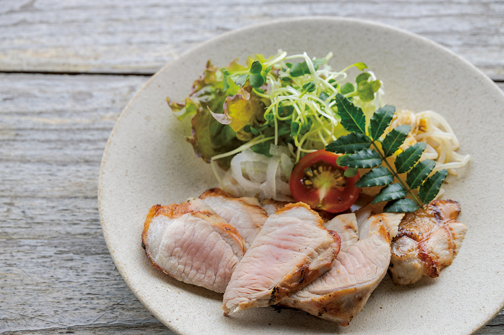
При ферме работает гостевой дом с рестораном «Нодока», куда приходят только по предварительной записи.
Ферма «Окита Куробута», гостевой дом и ресторан «Нодока»
- Адрес
- префектура Кагосима, Иса, Окути-Тасиро, 1558-66
- Телефон
- +81 995-28-2098
- Цены / Вход
- только по предварительной записи
Сётю
Чёрный кодзи и мастера из Куросэ
В конце эпохи Мэйдзи, в начале XX века, молодые люди из деревни Куросэ на полуострове Сацума привезли с островов Рюкю секреты авамори. Тех, кто освоил это ремесло, стали называть мастерами «Куросэ-тодзи», и они работали на винокурнях по всему Кюсю. Наследники этой школы до сих пор работают с чёрным кодзи и берегут собственные приёмы.
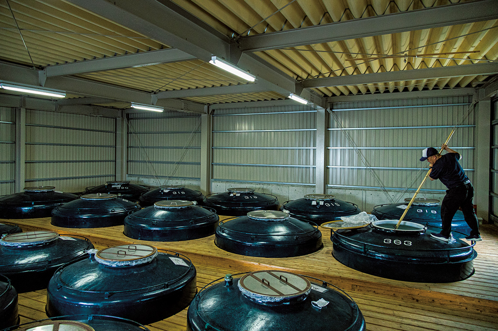
На винокурне «Кагосима сюдзо» в приморском городе Акунэ сегодня работает мастер второго поколения, который принял дело у наследника традиции Куросэ. Здесь берегут старые приёмы и при этом всё время пробуют новое.
«Кагосима сюдзо»
- Адрес
- префектура Кагосима, Акунэ, Сакаэ-мати, 130
- Телефон
- +81 996-72-0585
Соус
Сладкий чёрный соевый соус
Соевый соус Кагосимы считают самым сладким даже на Кюсю. В него добавляют крупный сахар и сироп, отчего соус становится сладким, насыщенным и густым, а цвет уходит в чёрный. Одна из семейных мастерских, которые его делают, «Ёсинага дзёдзотэн», стоит в городе Кагосима.
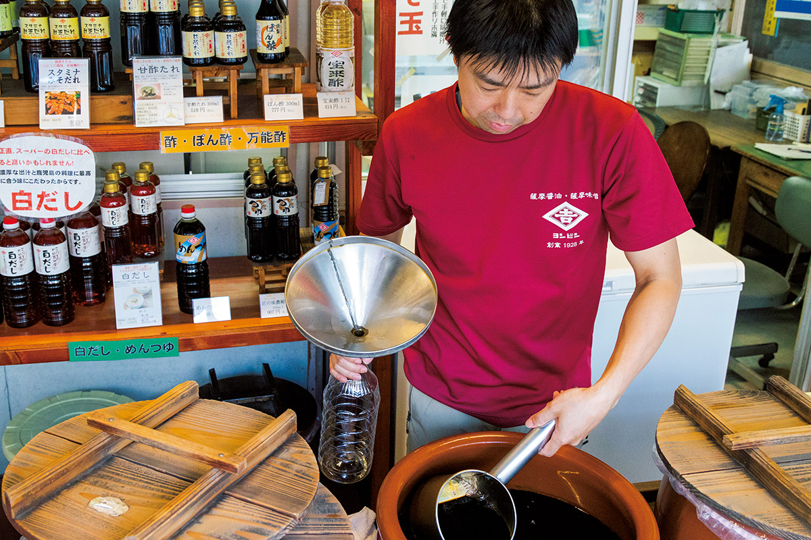
«В Кагосиме всегда любили сухой сётю с кисло-сладкой едой. Наверное, поэтому и соевый соус здесь стал сладким»
хозяин мастерской в третьем поколении
«Ёсинага дзёдзотэн»
- Адрес
- префектура Кагосима, город Кагосима, Нисида, 2-2-3
- Телефон
- +81 99-254-2663
Керамика
Сацума-яки в Мияма: красное внутри чёрного
Керамика сацума-яки известна в двух видах: белая «сиромон» и чёрная «куромон». В деревне Мияма (город Хиоки) знаменитая печь CHIN JUKAN POTTERY показывает, что у обеих есть красная основа. На белых чашках здесь тонко рисуют красных стрекоз, а глазурь с красным пигментом бэнгара после обжига даёт глубокий чёрный цвет куромона.
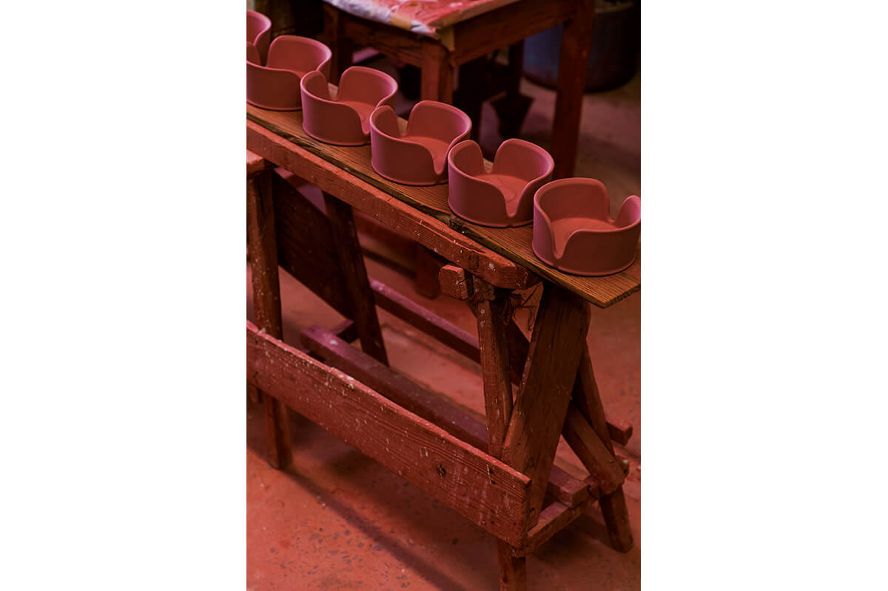
«И белое, и чёрное сацума-яки держится на красном»
глава печи в пятнадцатом поколении
В 2020 году глава печи рассказывал о планах открыть мастер-класс по росписи и кафе.
CHIN JUKAN POTTERY
- Адрес
- префектура Кагосима, Хиоки, Хигасиитики-тё, Мияма, 1715
- Телефон
- +81 99-274-2358
Итог
Чёрный, который смотрит вперёд
Чёрный в Кагосиме оказался очень разным: в нём живут мысли, знания и мастерство прошлых поколений. По дороге встречаются люди, которые берегут традицию, но чувствуют время и делают новое. Сила и мягкость сходятся в них в одно, и от этих встреч остаётся свежее, бодрое чувство.
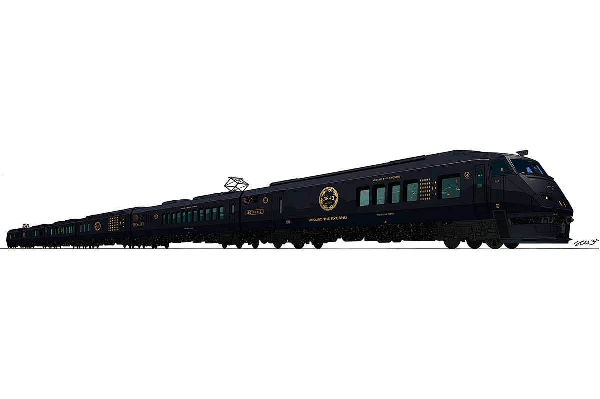
Фото: Хиромаса Оцука.